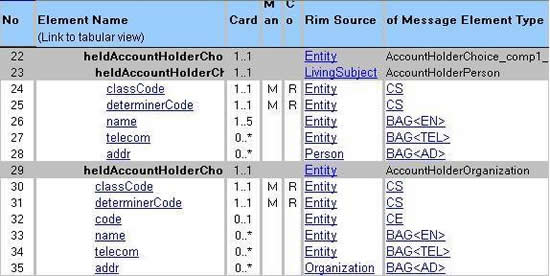
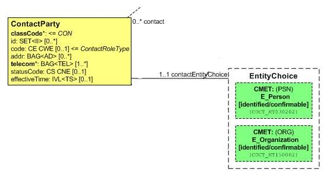

HL7 Version 3 Standard: XML Implementation Technology Specification - V3 Structures for Wire Format Compatible Release 1 Data Types, Release 1
 ANSI/HL7 V3 XMLITSSTR, R2-2014 HL7 Version 3 Standard: XML Implementation Technology Specification - Structures - Abstract DT R2 Implemented in Wire Format Compatible with DT R1, Release 1 3/16/2014 |
| Responsible Group | Implementable Technology Specifications Work Group HL7 |
| Editor | Grahame Grieve grahame@healthintersections.com.au Health Intersections |
| Editor | Gunther Schadow gschadow@regenstrief.org Regenstrief Institute, Inc. |
| ITS Co-Chair/Editor | Paul Knapp pknapp@pknapp.com.com Knapp Consulting Inc. |
| ITS Co-Chair | Dale Nelson dale.nelson@lantanagroup.com Lantana Group LLC |
| ITS Co-Chair | Andy Stechishin andy.stechishin@gmail.com CANA Software and Services Ltd. |
HTML Generated: 2017-05-31T12:34:50
HL7® Version 3 Standard, © 2014 Health Level Seven® International All Rights Reserved.
HL7 and Health Level Seven are registered trademarks of Health Level Seven International. Reg. U.S. Pat & TM Off.
Use of these materials is governed by HL7 International's IP Compliance Policy.
Table of Contents
Prefacei Acknowledgements
ii Prerequisites
1 Overview
1.1 Introduction and Scope
2 Backward Compatibility
2.1 Requirements for Backward Compatibility
2.2 Mechanisms of Compatibility
3 Mapping to the XML Instance
3.1 Overview
3.2 XML structures derived from an HMD
3.3 Use of XML Namespaces
3.4 Determination of the XML representation
3.4.1 Cardinality
3.4.2 Message Elements That Are HL7 Classes
3.4.2.1 Associations with direct content
3.4.2.2 Choices
3.4.2.3 CMETs
3.4.3 Message Elements That Are HL7 Attributes
3.4.4 Interactions
3.5 Informal Extensions
3.6 Backwards and Forwards compatibility
3.6.1 Minor version changes
3.6.1.1 Changes in cardinality
3.6.2 Examples
3.7 The Use of Schema Processors
4 References
5 Appendix A
5.1 Example Instance for an Interaction
This document has been developed on the basis of the previous XML ITS specifications that bear credits to the following persons not listed above as editors: George W. Beeler, Paul V. Byron, Joey Coyle, Bob Dolin, Kai Heitmann, Anthony Julian, Skirmantas Kligys, Charles McCay, Lloyd Mckenzie, Keith Naylor, Vassil Peytchev, Douglas Pratt, Wes Rishel, Scott Robertson, Rene Spronk, Matthew Stephens, Mark Tucker, and Joe Waller.
It is a prerequisite that readers have a general knowledge of XML technology. Readers unfamiliar with XML may gain the requisite knowledge from the following standards:
The reader also should be familiar with HL7 version 3 concepts - especially those related to message definition (HL7 information model terminology, data types, Message Instances, Message Types, Interactions, CMETs, wrappers, etc.). For more information on these, refer to the V3 Guide
This document describes how HL7 V3 compliant messages can be expressed using XML. It describes how the definition of the set of valid XML instance documents is derived from a specific HL7 Message Type. Those familiar with HL7 version 2 might call these the "XML encoding rules" for HL7 Version 3 messages.
The objective of this document is to present an Implementable Technology Specification (ITS) for the encoding rules for HL7 Version 3 messages and documents based on the Extensible Markup Language XML. The ITS Structures for Wire Format Compatible Release 1 Data Types specification, referred to as R2b, intends to be mostly wire-backwards-compatible to existing ITS Structures R1.1 but conformant (directly or indirectly) to abstract datatypes R2 and ISO harmonized data types. It is very similar to ITS R1.1, but while ITS R1.1 has relied on abstract data types R1 and has required the abstract static models (RIM, RMIMs, HMDs, Message Types) to be locked to abstract data types R1, the ITS R2b specification adopts all changes and new features that have been introduced since R1. In this way it is possible to derive mostly wire backward-compatible messages (schemas) from the latest abstract models without having to maintain different versions of those abstract models.
This is a bridge specification to allow a smooth transition between Datatypes R1 and Datatypes R2. For that reason HL7 does not expect to renew this specification after 5 years and may consider withdrawing it sooner. HL7 Work Groups should not develop specifications that are dependent upon ITS R2b unless there is an extant, demonstrable implementation of the earlier standard that justifies such backwards compatibility. It should never be used for new, unrelated endeavors. Further, specifications that are dependent upon this specification must begin planning a transition to DT R2 to take effect prior to the expiry of this specification. Permission of HL7, or a designated management committee such as the TSC, may be required to use this specification to create HL7 standards.
The corresponding data type descriptions necessary for this specification are described in the Wire Format Compatible Release 1 Data Types, Release 1.
Because this specification intends to support mostly wire backward-compatibility of HL7 v3 messages and documents, the rules for constructing XML messages and documents from abstract HL7 hierarchical models (HMDs) of this specification are not significantly different from the ITS R1 and R1.1 rules that preceded them.
Review the Preface of the HL7 Version 3 Standard: XML Implementation Technology Specification - Wire Format Compatible Release 1 Data Types, Release 1 specification for changes which break wire format compatibility, and for new data types and features.
The key aspect of this specification is that it seeks to preserve wire backward-compatibility in most cases across even major modifications of the underlying abstract material, especially the data types and the Reference Information Model (RIM). It is available, with permission, for work groups who intend to release a specification that requires XML level interoperability with previously issued standards while at the same time:
- wanting to use new features of the latest RIM, such as new classes or new attributes;
- being required to adopt changed data types that come with new RIM releases (e.g., Document.versionNumber changed from INT to ST);
- wanting to adopt new generic type extension (mixin data types), e.g., URG<T>
- wanting to simply reissue their specification without requiring any new features of newer versions of the RIM or data types (yet issuing a modified release of an existing specification without adopting the latest RIM and data types version results in major difficulties for the publication process, and also results in confusions on the side of adopters).
Typically a work group with an existing implementation base of their standards will be concerned with limiting the amount of modifications required from their implementer base to only those areas which are actually new. Typically new material are true additions of features that have not been available before. Sometimes a work group decides to modify a preexisting feature of limited power with a new feature that is more powerful. In those cases the work group will add one feature and deprecate another. Deprecation usually means the old feature is retained for a period of time (e.g. one or two release cycles.) These scenarios will create the following situations:
- Sender does not require the new feature nor the deprecated feature: in this case the sender continues to construct the same XML messages or documents as before and continues to conform to the new release of the specification without doing anything. If the sender did not need the deprecated feature, that sender will not require the new feature in place of the deprecated one either.
- Receiver does not handle the new features nor did they handle the deprecated feature: in this case the receiver continues to process the incoming XML messages and documents which do not contain the new feature, and continues to reject messages and documents that contain the deprecated feature or any new feature.
- Sender requires a new feature: in this case sender will adopt this new feature without modifying any of the rest.
- Receiver wishes to receive, and therefore handles the new feature: in this case the receiver can certainly handle messages or documents which do or do not actually use the new feature as well as those that do.
Thus in the cases 1, 3, and 4, the release of the new specification has not made any difference. The new feature is available without any of the existing features needing to be changed. Only in case 2, the receiver who does not understand the new features, but actually ends up receiving them from a sender of case 3, will there be a need to actually upgrade to a new version of the specification. Of course, use of these new features is the objective of any new release of an existing specification. However, because the new features are limited and all the rest of the specification remains unchanged, the cost of the change is contained to only the new feature where it adds value.
Whether a new RIM feaure is used or an existing RIM feature was previously excluded and now included in the new release of a standard, is the same thing. For this reason, this specification does not need to make any changes or special rulings about the addition or removal of attibutes. All handling of backwards compatibility will be a matter of the data type specification.
When an existing RIM feature which was included in the previous standard changes data type, the receiver must conceptually map content using the new data type to the existing data type which they handle. Such a data type change is unlikely to be constraining and usually will be expanding. The work group may then decide to constrain the value range of the attribute with the new data type back to those values that are compatible with the preceding data type. For example: The last case is a precedence that shows the working of this backward-compatibility specification: to accomodate certain data type changes one may have to introduce certain equivalences, such as accepting a single @value attribute to be sent for both of the low and high boundaries of an interval, i.e., one makes the compatible subset of the new data type "look" like the previous one. This is the same principle that the ITS 2b specificaiton introduces to support a change of data type from INT (or REAL) to ST: allowing the text content of the ST type to be delivered in the @value attribute.
- The data type changes from INT to ST: in this case the work group may decide to limit the value range of the attribute to only those strings which consist only of numerals without leading zeros
- The data type changes from INT to REAL: in this case the work group may decide to limit the value range of the attribute to only whole numbers.
- The data type changes from a simple quantity to a range (IVL or URG): in this case the work group may decide to constrain the data type back to the simple quantity. This is possible because of a backward-compatibility feature that had been built into some data types from the start to support these situations. For example, INT<TS> could be constrained to a simple TS in derived models.
When new data types are introduced in the abstract models (abstract data types and usable for new or existing RIM attributes) or when data types are changed, the backward compatibility features are introduced into the data types ITS R2b. The structures ITS remains unchanged. However, we shall explain these changes here in the context of the backward compatibility discussion. The following are the important innovations on the abstract data types R2: How these changes are handled in a backward-compatible manner will be described in the remainder of this section.
- added new data types;
- added properties to various data types (e.g., a collection may be null distinguished from their elements being null);
- removed new data types (e.g., removed the CE data type in favor of CD to be used everywhere);
- removed properties to various data types (e.g., removed the qualifier property from CD in favor of post-coordination syntax used in the code property as specified by the code system);
- introduced the Collection type COLL as an abstraction of SET, LIST, and BAG;
- split SET into discrete set (DSET) and continuous set of quantities (QSET);
- reorganized the way to specify QSETs from using the SXCM and SXPR types with the operator property to specifying data types which represent term constructors for union (QSU), intersection (QSI), difference (QSD), convex hull (QSH) and periodic hull (QSP).
When data types have been added, these will be made available in the data type ITS R2b, preferrably in the same presentation form as in the ITS R2. However, there may be exceptions. For example, the type URG<T> was introduced to have the same XML presentation as the type IVL<T> but also be a generic type extension of T and used in cases where the interval was to specify a confidence interval. Since the representation of the IVL<T> was changed in data types ITS R2, the URG<T> will be presented in the same form as IVL<T> in ITS R2b, not in the form of IVL<T> in ITS R2.
When properties have been added, these added properties will be made available in the data type ITS R2b, preferrably in the same presentation form as in the ITS R2. There may be exceptions out of similar reasoning as for new types. For example, the data types R2 have added a clear difference between a collection that is null and a collection with no elements or a collection with only one null element. This difference can be presented by adding XML attributes to express the new distinctions in a manner where their omission would still practically lead to valid interpretations by receivers who know nothing about these new nuances and will not lead those receivers that do know these nuances to misinterpret messages or documents created by senders who do not know them.
When data types are removed, the data type name will be preserved in the data type ITS R2b as a synonym for the next closest prevailing data type. For example, the departing CE data type will be retained as a synonym for CD, since the properties of CE and CD are the same (particularly after departure of the qualifier property from CD). Since the qualifier property of CD in abstract data types R1 disappears in R2, the qualifier does not need to be disallowed in CE, hence, the CE data type prevails in the ITS R2b specification as it was for ITS R1. Since CE has been a constraint of CD all along, there is no difference for receiving systems effected through this change.
When data type properties are removed, the properties will most likely be retained in the ITS R2b but conceptually mapped to some function of the data type. A property may have been removed for two reasons: (a) the design was wrong and hence likely never has been used correctly, or (b) the design was modified and the same functionality is now presented in a different way. In case of a removal of a defunct property, ITS R2b may decide to no longer present such property. In the case of a new approach to present such functionality, the old property and its presentation is preserved and conceptually mapped to the new method. For example, the CD.qualifier is preserved but since qualifiers could only be used if the underlying code system allowed their use, with the new CD's approach to represent post-coordination in the code literal itself according to the code system's own specification, those code systems' specifications will say how qualifiers are presented in literals instead.
The introduction of the abstract collection data type can be handled by ITS R2b because ITS R2b handles all of the concrete collection types. Since by definition there is no instantiation of an abstract type without it being an instantiation of one of its concrete subtypes, there is no need to introduce a new feature into the ITS to represent that abstract type, except for (a) introducing the abstract type itself and making the subtypes proper subtypes of that abstract type and (b) providing for a meachanism to distinguish which of the concrete type is used. The distinction can be made where it actually matters. For example, if the distinction may now be made between a LIST, BAG, and a SET of names, when previously the type was simply BAG, then the existing implementations will continue to interpret the received content as BAG, notably, they will tend not to pay attention to ordering, nor will they be concerned about removing duplicates. This is a fair approach unless the work group chooses to use, for example, the possibility of implying a rank order by the ordering feature available through LIST. The work group must be careful when introducing such new interpretations, but it is possible to do. This is because even though the sender according to the older release may not have intended to give a rank ordering, that sender would certainly have allowed the receiver to choose his own rank ordering. Hence, if the receiver now begins interpreting the BAG contents as a list, no mistake has been introduced.
Splitting the SET type into discrete set (DSET) and continuous set (QSET) has mainly clarified an aspect that was already inherent in abstract data types R1, in fact, any full implementation of the abstract data types R1 had to make this decision in order to handle the SXCM @operator attribute correctly. Now a DSET is represented like LIST and BAG as an enumeration of elements by means of repeating the XML element representing the attribute of the DSET data type.
Introduction of the QSET specializations QSU, QSI, etc. is also already implied in data types R1 and only represented differently through the SXCM type with the @operator attribute. We can therefore map the new QSET specializations as follows:
- union (QSU) is a sequence of SXCM with @operator = 'I' (include)
- intersection (QSI) is a sequence of SXCM with @operator = 'A" (and, intersection)
- difference (QSD) is a sequence of SXCM with @operator = 'E" (exclude)
- convex hull (QSH) is a sequence of SXCM with @operator = 'H'
- periodic hull (QSP) is a sequence of SXCM with @operator = 'P'
- usually when operators were mixed the SXPR type was used to nest parenthesis, and that is no longer required because of the new structure given through the QSx types, however, when mapping these QSx types to ITS R2b, SXPR is required to ensure proper nesting, i.e., any non-atomic operand of QSx should be nested in an SXPR parenthesis.
This section describes how an HL7 V3 Message Type can be represented in an XML instance document. The representation is determined algorithmically from the HL7 Message Type definition.
For the purposes of this document, we will be referring to static models and HL7 V3 Message Types as equivalent concepts. The term "static model" avoids leaving the incorrect impression that models are not only for use in a messaging paradigm. Both terms are used to name a fully specified, constrained, implementable definition of an HL7 V3 message or document in a serial tabular format. However, one should recall that HL7 Message Types are derived from higher level message definitions such as HMDs and information models (RMIMs, etc). All information contained in HL7 message types is ultimately derived from the V3 RIM. Therefore, although the Message Type is useful for defining how to create an XML instance for a message or document in an algorithmic way, the semantics may be better understood by also looking at higher level representations. For more information on HL7 V3 Message Types, HMDs, and RMIMs, please refer to the V3 Guide.
- The set of XML instances that are conformant for each message type described by an HMD has a structure with elements corresponding to class clones, and both element and attributes corresponding to class clone attributes. HL7 structural attributes of the class clone are represented as XML attributes, all other HL7 attributes are represented as child elements in the XML instance. The association names determine the names of the elements that represent the class clones.
- Some Message Type definitions refer to CMETs. This specification describes how embedded CMETs are encoded in a message instance as well.
- CDA documents are all derived from a single message type.
- To encode an HL7 message, wrappers define information for the message transmission (Transmission Wrapper) and the semantic interpretation (Control Act Wrapper). An HL7 Interaction defines a complete message including the Message Type, the Transmission Wrapper and the Control Act Wrapper. This specification describes how the wrappers are represented in an XML Message Instance.
- Each HL7 attribute has a Data Type associated with it. The XML implementation of these data types is described in a companion document - the XML ITS Data Types
- Additional information not specified by the message type may be included in the instance using the extensions mechanisms described below. Receiving systems must ignore extensions that they do not recognize.
The XML elements and attributes in a message instance correspond one-to-one with individual rows in the HMD. The root element representation for a transmission wrapper is the only exception to this representation. This is explained in more detail below.
Structural attributes like classCode, moodCode etc., are represented as XML attributes in the instance. Where these have fixed values defined in the HMD, they may be omitted from the instance. Where there is a default value, and the default is appropriate for the instance, the XML attribute may be omitted. Where an XML attribute has been omitted the receiving system should assume the fixed or default value as specified in the HMD.
All XML elements and attributes (except for informal extensions and the contents of ED datatypes) are to be represented
in the namespace defined by "urn:hl7-org:v3".
Attributes "type" and "nil" from the xmlns:xsi="http://www.w3.org/2001/XMLSchema-instance" namespace may be used. The "type" attribute will be used to indicate the datatype of elements where this could be ambiguous.
In this document all examples will be written with the assumption that hl7 has been declared as a prefix for the hl7 namespace as follows: xmlns:hl7="urn:hl7-org:v3". Note that any valid namespace prefix (or none) may be used in practice.
The use of namespaces within the ED datatype are discussed in the XML ITS R2B Data Types.
XML content from other namespaces (except within an ED datatype) will be assumed to be informal extensions as described later in this document and be ignored by receiving systems that do not recognize them.
For each row in the HMD representing a class, attribute, or association the cardinality in the HMD sets the upper and lower limits on the number of elements that may be included in the instance which correspond to that row. Note that it is never possible to repeat structural attributes, and these are optional in the XML instances if a default or fixed value has been set.
The name for the element representing the Class is taken either from the association name, or in the case of the root element representation for a transmission wrapper, from the InteractionID.
Where the Class is flagged as Mandatory it must be included in the message for the message to be valid.
The XML representation of these elements are determined by the SRC column, whose value will be one of: "N", "R", "U", "I", or "C".
If the value of the SRC column, shown in the graphic below between the Mandatory and RIM Source columns, is "N" or "R" then the XML representation will be a sequence of child elements, one for each HMD row of type "Attr" followed by one for each HMD row of type "Assoc" whose InMET column equals the Row column of the row in question.
Example:

<hl7:author typeCode="AUT" xmlns:hl7="urn:hl7-org:v3"> <hl7:assignedEntity classCode="ASSIGNED"> <hl7:id root="2.16.840.1.113883.2.1.4.2" extension="G0000017"/> <hl7:code codeSystem="99.999.99.9.9" code="008" displayName="Doctor"/> </hl7:assignedEntity> </hl7:author>
The preceding is true unless the value of OfMET (of Message Element Type) contains a choice of more than one message element type. In this case, the XML representation represents the choice as a choice of one or more XML elements corresponding to those identified in the ofMET row. Each element will have content derived as described in this section from the row in the HMD with that Element Name.
If the value of the SRC column is “I” or “U” then the XML representation is the same as defined for the row in the HMD being referenced. In the case of “I” the content in the row must also be identical.
Example:


<hl7:accountHolder xmlns:hl7="urn:hl7-org:v3">
<hl7:id root="AAAABBBB-1452-6352-7363-DEA51FEA5241"/>
<hl7:heldAccountHolderPerson classCode="PSN" determinerCode="INSTANCE">
<hl7:name>
<hl7:given>Adam</hl7:given>
<hl7:family>Everyman</hl7:family>
</hl7:name>
<hl7:addr>
<hl7:streetAddressLine>
2222 Home Street
</hl7:streetAddressLine>
<hl7:city>Ann Arbor</hl7:city>
<hl7:state>MI</hl7:state>
<hl7:postalCode>99999</hl7:postalCode>
<hl7:country>USA</hl7:country>
</hl7:addr>
</hl7:heldAccountHolderPerson>
</hl7:accountHolder>
If the HMD Element is defined by a CMET (i.e. a “C” in the SRC column), then the XML representation is determined by applying the rules in “Message Elements That Are RIM Classes” to the CMET for that element which is specified in the ofMET column.
If the value of the SRC column is “I” or “U” then the XML representation is the same as defined for the row in the HMD being referenced. In the case of “I” the content in the row must also be identical.
Example:

<hl7:contact xmlns:hl7="urn:hl7-org:v3"> <hl7:id root="AAAA1234-ADE1-543A-CFD4-DACE42D93FAC"/> <hl7:statusCode code="active"/> <hl7:telecom value="tel:+441234123456"/> <hl7:effectiveTime value="20040314"/> <hl7:contactPerson> .... </hl7:contactPerson> </hl7:contact>
HL7 immutable class attributes are conveyed as xml attributes. Where there is a default or fixed value defined in the HL7 static model then the attribute may be omitted from the XML representation, and the receiving system will behave as though the fixed or default value was sent. Note that according to the Refinements and Localization document "the default is a single value, once a default has been set, it may not be further constrained. Moreover, the assertion of default values may only be done by an HL7 Technical Committee as it prepares a ballot, or by an HL7 International Affiliate that is preparing a region-specific profile".
The declared type for a structural attribute is mapped to a schema or ISO datatype simple type as follows:
| Attribute Type | Schema Type |
|---|---|
| BL | xsd:boolean |
| CS | Code |
| INT | xsd:integer |
| REAL | Decimal |
| ST | xsd:string |
HL7 Non-immutable class attributes are represented as xml elements with the name taken from the “Element Name” in the HMD. The XML representation of these elements are determined by the Message Element Type (ofMET). Specifically, the name of a row of type "Attr", is the name of the OfMET which is a Version 3 Data Type, and hence, the XML representation will be as described in the Wire Format Compatible Release 1 Data Types, Release 1. The transformation between the OfMET name and the value of the XML element type is performed by applying these steps in sequence:
- Where all or part of the ofMET refers to a “datatype flavor” (see the Data Types Specification), the type referenced will be the base type for the flavor, rather than the flavor as flavors reflect constraints and do not change type definitions. For example, IVL.LOW<TS.DATE> becomes IVL<TS>. Usually this is accomplished by stripping the first period after the name and everything following it. However, for some types such as CE, PN, etc., the name will be directly asserted based on the datatypes specification.
- All references to Mixins (see the Data Types Specification), (EXPR, HXIT, PPD, URG and UVP) will be removed. E.g. URG<PQ> will be treated as "PQ". SET<HXIT<TEL>> will be treated as SET<TEL>.
- If the RTO type is encountered, the type simply becomes RTO. For example RTO<MO,PQ.TIME> becomes RTO.
- Parameterized types change from an angle-bracket expression to a separation with an underscore. For example, IVL<PQ> becomes IVL_PQ.
Note: Complex nested types (e.g. DSET<IVL<PQ>> are not supported.
The xsi:type attribute must be declared for attributes whenever they are instantiating a model attribute whose datatype is abstract or which contains abstract parameters. E.g. ANY, QSET, IVL<QTY>, COLL<ST>, etc.
Example: in this example we are focussing on the ObservationGeneral class

<hl7:observationGeneral classCode="OBS" moodCode="EVN" xmlns:hl7="urn:hl7-org:v3"> <hl7:code codeSystem"2.16.840.1.113883.6.1" code="15974-8"/> <hl7:statusCode code="complete"/> ... <hl7:value xsi:type="PQ" value="2.7" unit=mmol/L"/> </hl7:observationGeneral>
Interactions are defined for HL7v3 messages, but are not relevant for CDA documents. See the V3 Guide for further details on how and why interactions are defined and used.
Interactions are represented by an XML element named using the artifact code for the interaction. The content model of this element is determined by the Message Type for the transmission wrapper.
Where the transmission wrapper contains a Control Act class, this class is replaced by the Control Act Message Type as specified for the interaction. If the Control Act Message Type contains an entry point stub, then this is replaced by the Message Type for the payload as defined in the interaction.
The Interaction element must have an attribute “ITSversion” that provides a version identifier for the XML R2B ITS (Datatypes and Structures) that is to be used.
In order to support informal extensions as described in the HL7 V3 Conformance and extensibility specification, it is permitted to include additional XML elements and attributes that are not included in the HL7 definition of a message type. These extensions should not change the meaning of any of the standard data items, and receiving applications must be able to safely ignore these elements.
When included in an instance local extensions MUST be in a namespace other than the HL7v3 namespace. Such extensions must not be included within an ED datatype, since it would not always be possible to distinguish between foreign namespace items that form part of the content of the standard ED datatype, and content that was intended to be an informal extension. Since all conformant content (outside of elements of type ED) is in the HL7 namespace, the sender can put any extension content into a foreign namespace (any namespace other than the HL7 namespace or the "xsi" namespace defined by W3C), and the receiver will be able to recognise that such content may be safely ignored. Receiving systems must not report an error if such extensions are present.
Example:
<hl7:inFulfillmentOf xmlns:hl7="urn:hl7-org:v3">
<hl7:priorActRequest>
<ex:MessageRequests
xmlns:ex="http://www.example.com/messaging">
<ex:RequestedMessage>
001-345-234
</ex:RequestedMessage>
</ex:MessageRequests>
</hl7:priorActRequest>
</hl7:inFulfillmentOf>
Where there is a requirement to extend a static model with attributes or associations that conform to a different version of the model, the content should be included in the HL7 namespace, but with an "HL7extension" attribute used to indicate that it is an extension. Where present the XML attribute "HL7extension" MUST contain the artefactId of the most granular static model in which the extension has been defined. Receiving systems must ignore content that has an HL7extension attribute that is not recognised.
<hl7:representedOrganization classCode="ORG" determinerCode="INSTANCE"> <hl7:id root="1.2.826.0.1285.0.1.10" extension="300045332098"/> <hl7:name HL7extension="PRPA_MT201301UV02">St. Elsewhere's Hospital</hl7:name> </hl7:representedOrganization>
When there are major differences in the versions of either the abstract HL7 artifact definitions, or of the ITS, it is anticipated that these versions will be no more than a single XSLT transform apart.
In this specification we hope to improve on the XML ITS R1 rules, by introducing the concept of "minor version changes" which are structurally backwards compatible, and so can be conveyed without having to introduce different namespace processing. This allows processors to be written that "pull" the classes and attributes that they are interested in from the XML instance in the same way whether they are transmitted as an extension to an earlier version of the static model definition, or as directly conforming in an instance of a latter version of a static model.
The extension mechanism is only intended for use in managing extensions defined by the orgainisation that is responsible for maintaining the base specifications (ie HL7.org or HL7 affiliates). Informal local extensions should still be expressed in a foreign namespace.
Changes in cardinality are permitted, and document order is used to establish the appropriate fallback. A release one processor can still interpret the output by processing the first participation in document order.
This specification requires that where a cardiality is increased in a minor version change, a receiver may safely process on the basis of the more limited cardinality if the do not support the extension, but that the extensions must also be marked using the hl7extension attribute. This simplifies receiver processing, while still supporting testing and validation using the hl7extension attribute.
The following examples are presented as fragments from the interaction Patient Registry Record Added (PRPA_IN201301UV), and
predict future changes. PRPA_MT201301UV is the artefactId for the payload message type. Note that if the fragments had come
from a CMET, then the CMET message type identifier (with version) would be used.
While genuine artefactIds are used, the content models have been created to illustrate the extension mechanism.
A fragment from a message/document that comforms to the static model PRPA_MT201301UV01, where only an identifier for
the represented organization is provided.
<hl7:representedOrganization classCode="ORG" determinerCode="INSTANCE">
<hl7:id root="1.2.826.0.1285.0.1.10" extension="300045332098"/>
</hl7:representedOrganization>
A possible approach using the HL7extension attribute – this is still a valid instance of PRPA_MT201301UV01, with all nodes that include an HL7extension attribute being ignored. But it could also be processed as an instance of PRPA_MT201301UV02 by applications that recognise this artefactId in the HL7extension attribute.
<hl7:representedOrganization classCode="ORG" determinerCode="INSTANCE">
<hl7:id root="1.2.826.0.1285.0.1.10" extension="300045332098"/>
<hl7:name HL7extension="PRPA_MT201301UV02">St. Elsewhere's Hospital</hl7:name>
</hl7:representedOrganization>
A further version of the version of the model may allow for, or even require, a description for the organisation.
<hl7:representedOrganization classCode="ORG" determinerCode="INSTANCE">
<hl7:id root="1.2.826.0.1285.0.1.10" extension="300045332098"/>
<hl7:name HL7extension="PRPA_MT201301UV02">St. Elsewhere's Hospital</hl7:name>
<hl7:desc HL7extension="PRPA_MT201301UV03">A description could be added in v3 of PRPA_MT201301
and would not be processed by a v2 aware processor</hl7:desc>
</hl7:representedOrganization>
An instance claiming direct conformance to the static model PRPA_MT201301UV03 would contain neither of the HL7extension attributes, but otherwise the XML for the representedOrganization would be the same. Code that has been written to use the extensions should therefore be able to process instances of the new version of the satic model with minimal change.
<hl7:representedOrganization classCode="ORG" determinerCode="INSTANCE"> <hl7:id root="1.2.826.0.1285.0.1.10" extension="300045332098"/> <hl7:name>St. Elsewhere's Hospital</hl7:name> <hl7:desc>A description could be added in v3 of PRPA_MT201301 and would not be processed by a v2 aware processor</hl7:desc> </hl7:representedOrganization>
Schema processing is not a conformance requirement although this specification has been designed to make schema processing beneficial. Where schemas are used receivers may use alternate schemas (including DTDs) than the ones provided by HL7.
Sending applications should not provide schema location hints for the HL7 namespace and receiving applications that perform schema processing should ignore such hints if provided and instead should use whatever other means they have at their disposal to locate the relevant official HL7 schemas or their own customizations thereof. It is in the interest of the receivers own security and safety not to use sender supplied schemaLocation hints.
[rfDatatypes1]
HL7Version 3 Data Types Abstract
[rfDatatypes2]
HL7 Version 3 ITS XML Data Types
[rfXMLschema]
World Wide Web Consortium. XML Schema.
http://www.w3.org/TR/xmlschema-0/
http://www.w3.org/TR/xmlschema-1/
http://www.w3.org/TR/xmlschema-2/
World Wide Web Consortium. XML Schemas Part 1: Structures.
http://www.w3.org/TR/xmlschema-1/
World Wide Web Consortium. XML Schemas Part 2: Datatypes.
http://www.w3.org/TR/xmlschema-2/
[rfXML]
World Wide Web Consortium. Extensible Markup Language, 1.1 W3C Recommendation 04 February 2004.
http://www.w3.org/TR/2004/REC-xml11-20040204/
[rfXMLnamespace]
World Wide Web Consortium. Namespaces in XML.
http://www.w3.org/TR/REC-xml-names/
[rfXPath]
World Wide Web Consortium. XML Path Language.
http://www.w3.org/TR/xpath/
[rfXSLT]
World Wide Web Consortium. XSL Transformations (XSLT).
http://www.w3.org/TR/xslt/
[rfV3guide]
Version 3 Guide.
http://www.hl7.org/home/content/HTML-menus/V3Guide.htm
{rfV3Glossary}
Version 3 Glossary
The following is an example instance for the interaction PRPA_IN403001 taken from the emergency encounter topic in the patient administration domain.
<?xml version="1.0" encoding="utf-8"?>
<!--Example copyright 2004 by Health Level Seven, Inc. -->
<!-- Example message for PRPA_IN403001 - Emergency
Encounter Started interaction -->
<hl7:PRPA_IN403001 xmlns:hl7="urn:hl7-org:v3">
<hl7:id root="2.16.840.1.113883.1.6"
extension="1-976-245"
displayable="true"/>
<hl7:creationTime value="20040927100100"/>
<hl7:versionCode code="V3PR1"/>
<hl7:interactionId root=" 2.16.840.1.113883.2.1.3.2.4.12"
extension=" PRPA_IN403001" displayable="true"/>
<hl7:processingCode code="P"/>
<hl7:processingModeCode code="T"/>
<hl7:acceptAckCode code="AL"/>
<hl7:receiver>
<hl7:device>
<hl7:id root="2.16.840.1.113883.19.3.2408"
extension="123" displayable="true"/>
<hl7:name use="L">
<hl7:given>Good Health Lab System</hl7:given>
</hl7:name>
</hl7:device>
</hl7:receiver>
<hl7:sender>
<hl7:device>
<hl7:id root="2.16.840.1.113883.19.3.2409"
extension="456" displayable="true"/>
<hl7:name use="L">
<hl7:given>
Good Health Patient Admin System
</hl7:given>
</hl7:name>
</hl7:device>
</hl7:sender>
<!-- ControlAct starts here -->
<hl7:controlActProcess>
<hl7:code code="PRPA_TE403001"
codeSystem="2.16.840.1.113883.5.4"
codeSystemName="HL7TriggerEventCode"/>
<hl7:effectiveTime value="20040927095000"/>
<hl7:authorOrPerformer typeCode="AUT">
<hl7:assignedEntity classCode="PRS">
<hl7:id root="2.16.840.1.113883.19.3.2409"
extension="10001" displayable="true"/>
<hl7:telecom value="tel:+1(955)555-1005" use="MC"/>
<hl7:telecom value="mailto:admit@eg.net"/>
<hl7:assignee>
<hl7:assigneePerson>
<hl7:name use="L">
<hl7:given>Eric</hl7:given>
<hl7:family>Emergency</hl7:family>
</hl7:name>
</hl7:assigneePerson>
</hl7:assignee>
</hl7:assignedEntity>
</hl7:authorOrPerformer>
<hl7:dataEnterer>
<hl7:time value="20040927100000"/>
<hl7:assignedEntity classCode="PRS">
<hl7:id root="2.16.840.1.113883.19.3.2409"
extension="10055" displayable="true"/>
<hl7:assignee>
<hl7:assigneePerson>
<hl7:name use="L">
<hl7:given>Christopher</hl7:given>
<hl7:family>Clerk</hl7:family>
</hl7:name>
</hl7:assigneePerson>
</hl7:assignee>
</hl7:assignedEntity>
</hl7:dataEnterer>
<hl7:subject>
<!--Example payload for Emergency Encounter Started
(PRPA_MT403001) -->
<hl7:encounterEvent>
<hl7:id root="2.16.840.1.113883.19.3.2409"
extension="12345" displayable="true"/>
<hl7:code code="EMER"
codeSystem="2.16.840.1.113883.5.4"
codeSystemName="ActCode" displayName="emergency"/>
<hl7:statusCode code="active"/>
<hl7:effectiveTime>
<hl7:low value="20040927095000" inclusive="true"/>
</hl7:effectiveTime>
<hl7:priorityCode code="EM"
codeSystem="2.16.840.1.113883.5.7"
codeSystemName="ActPriority"
displayName="emergency"/>
<hl7:confidentialityCode code="N"
codeSystem="2.16.840.1.113883.5.25"
codeSystemName="Confidentiality"
displayName="normal"/>
<hl7:reasonCode code="MEDNEC"
codeSystem="2.16.840.1.113883.5.8"
codeSystemName="ActReason"
displayName="Medical_Necessity"/>
<hl7:admissionReferralSourceCode code="7"
codeSystem="2.16.840.1.113883.5.39"
codeSystemName="EncounterReferralSource"
displayName="Emergency_Room"/>
<hl7:specialCourtesiesCode code="NRM"
codeSystem="2.16.840.1.113883.5.40"
codeSystemName="EncounterSpecialCourtesy"
displayName="norrmal_courtesy"/>
<hl7:subject>
<hl7:patient>
<hl7:id root="2.16.840.1.113883.19.3.2409"
extension="444551234" displayable="true"/>
<hl7:addr use="HP">
<hl7:streetAddressLine>
2222 Home Street
</hl7:streetAddressLine>
<hl7:city>Ann Arbor</hl7:city>
<hl7:state>MI</hl7:state>
<hl7:postalCode>99999</hl7:postalCode>
<hl7:country>USA</hl7:country>
</hl7:addr>
<hl7:patientLivingSubject>
<hl7:birthplace>
<hl7:addr use="BIR">
Ann Arbor, MI USA
</hl7:addr>
</hl7:birthplace>
<hl7:name>Adam A Everyman</hl7:name>
<hl7:administrativeGenderCode code="M"
codeSystem="2.16.840.1.113883.5.1"
codeSystemName="AdministrativeGender"
displayName="Male"/>
<hl7:birthTime value="19550304"/>
</hl7:patientLivingSubject>
<hl7:providerOrganization>
<hl7:id root="2.16.840.1.113883.19.3.2409"
extension="1-976-245" displayable="true"/>
<hl7:name use="L">
<hl7:suffix qualifier="LS">
Inc.
</hl7:suffix>
Good Health Hospital
</hl7:name>
<hl7:addr use="HP">
<hl7:streetAddressLine>
2222 Hospital Street
</hl7:streetAddressLine>
<hl7:city>Ann Arbor</hl7:city>
<hl7:state>MI</hl7:state>
<hl7:postalCode>99999</hl7:postalCode>
<hl7:country>USA</hl7:country>
</hl7:addr>
</hl7:providerOrganization>
</hl7:patient>
</hl7:subject>
<hl7:admitter>
<hl7:time>
<hl7:low value="20040927095000"
inclusive="true"/>
</hl7:time>
<hl7:assignedPerson classCode="PRS">
<hl7:id root="2.16.840.1.113883.19.3.2409"
extension="10001" displayable="true"/>
<hl7:telecom value="tel:+1(955)555-1005"
use="MC"/>
<hl7:telecom value="mailto:admit@eg.net"/>
<hl7:assignee>
<hl7:assigneePerson>
<hl7:name use="L">
<hl7:given>Eric</hl7:given>
<hl7:family>Emergency</hl7:family>
</hl7:name>
</hl7:assigneePerson>
</hl7:assignee>
</hl7:assignedPerson>
</hl7:admitter>
<hl7:attender>
<hl7:time>
<hl7:low value="20030927095000"
inclusive="true"/>
</hl7:time>
<hl7:statusCode code="active"/>
<hl7:assignedPerson classCode="PRS">
<hl7:id root="2.16.840.1.113883.19.3.2409"
extension="10001" displayable="true"/>
<hl7:telecom value="tel:+1(955)555-1006"
use="MC"/>
<hl7:telecom value="mailto:attend@eg.net"/>
<hl7:assignee>
<hl7:assigneePerson>
<hl7:name use="L">
<hl7:given>Eric</hl7:given>
<hl7:family>Emergency</hl7:family>
</hl7:name>
</hl7:assigneePerson>
</hl7:assignee>
</hl7:assignedPerson>
</hl7:attender>
<hl7:location>
<hl7:time>
<hl7:low value="20040927095000"
inclusive="true"/>
</hl7:time>
<hl7:statusCode code="active"/>
<hl7:serviceDeliveryLocation>
<hl7:code code="ER"
codeSystem="2.16.840.1.113883.5.111"
codeSystemName="RoleCode"
displayName="Emergency_room"/>
<hl7:statusCode code="active"/>
<hl7:location>
<hl7:name>ER - Room 4 - Bed B</hl7:name>
</hl7:location>
</hl7:serviceDeliveryLocation>
</hl7:location>
<hl7:notificationContact>
<hl7:notificationParty>
<hl7:id root="2.16.840.1.113883.19.3.2409"
extension="1-976-245" displayable="false"/>
<hl7:addr use="HP">
<hl7:streetAddressLine>
5555 Home Street
</hl7:streetAddressLine>
<hl7:city>Ann Arbor</hl7:city>
<hl7:state>MI</hl7:state>
<hl7:postalCode>99999</hl7:postalCode>
<hl7:country>USA</hl7:country>
</hl7:addr>
<hl7:telecom value="tel:+1(555)555-2010"
use="H"/>
<hl7:contactParty>
<hl7:Person>
<hl7:id root="2.16.840.1.113883.19.3.2409"
extension="1-976-245" displayable="false"/>
<hl7:name use="L">
<hl7:given>Carrie</hl7:given>
<hl7:given>C</hl7:given>
<hl7:family>Contact</hl7:family>
</hl7:name>
<hl7:administrativeGenderCode code="F"
codeSystem="2.16.840.1.113883.5.1"
codeSystemName="AdministrativeGender"
displayName="Female"/>
</hl7:Person>
</hl7:contactParty>
</hl7:notificationParty>
</hl7:notificationContact>
<hl7:pertinentInformation1>
<hl7:valuablesLocation negationInd="false">
<hl7:text mediaType="text/plain">
Mr. Everyman's valuables were checked into
patient valuables location ER-3.
</hl7:text>
<hl7:value mediaType="text/plain">
Mr. Everyman arrived with a wedding ring,
a Timex watch, a wallet with $35 and an
American Express credit card, and a set of
house and car keys. These items were stored
for safekeeping during his stay.
</hl7:value>
</hl7:valuablesLocation>
</hl7:pertinentInformation1>
<hl7:pertinentInformation2>
<hl7:priorityNumber value="1"/>
<hl7:observationDx negationInd="false">
<hl7:code code="ADMDX"
codeSystem="2.16.840.1.113883.5.4"
codeSystemName="ActCode"
displayName="admitting_diagnosis"/>
<hl7:statusCode code="active"/>
<hl7:value code="518.82"
codeSystem="2.16.840.1.113883.5"
codeSystemName="ICD9" codeSystemVersion="9"
displayName="Acute Respiratory Distress"/>
</hl7:observationDx>
</hl7:pertinentInformation2>
<hl7:arrivedBy contextControlCode="OP"
contextConductionInd="true" typeCode="ARR">
<hl7:transportationEvent moodCode="EVN">
<hl7:text mediaType="text/plain">
Ambulance
</hl7:text>
</hl7:transportationEvent>
</hl7:arrivedBy>
</hl7:encounterEvent>
</hl7:subject>
</hl7:controlActProcess>
</hl7:PRPA_IN403001>
| Return to top of page |